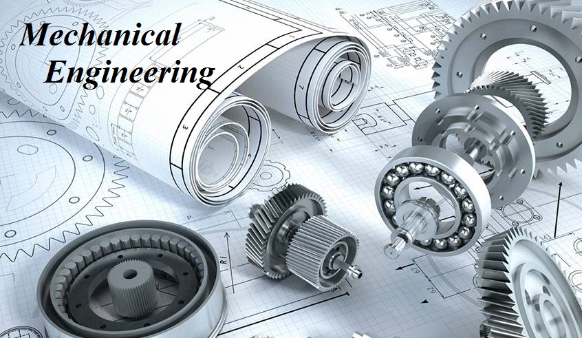

Technical Interview Questions & Answers For Mechanical Engineering

1. Explain the second law of thermodynamics.
The entropy of the universe increases over time and moves towards a maximum value.
2. What kinds of pipes are used for steam lines?
Normally galvanized pipes are not used for steam. Mild steel with screwed or welded fittings are the norm. Pressure and temperature are very important factors to be considered in what type of materials to be used. Steam even at low pressures can be extremely dangerous.
3. What is the difference between shear center flexural center of twist and elastic center?
The shear center is the centroid of a cross-section. The flexural center is the center of twist, which is the point on a beam that you can add a load without torsion. The elastic center is located at the center of gravity. If the object is homogeneous and symmetrical in both directions of the cross-section then they are all equivalent.
4. What is ferrite?
Magnetic iron rock
5. What is the difference between projectile motion and a rocket motion?
A projectile has no motor/rocket on it, so all of its momentum is given to it as it is launched. An example of a projectile would be pen that you throw across a room.
A rocket or missile does have a motor/rocket on it so it can accelerate itself while moving and so resist other forces such as gravity.
6. What is a cotter joint?
These types of joints are used to connect two rods, which are under compressive or tensile stress. The ends of the rods are in the manner of a socket and shaft that fit together and the cotter is driven into a slot that is common to both pieces drawing them tightly together. The tensile strength of the steel is proportionate to the strength needed to offset the stress on the material divided by the number of joints employed.
7. What is the alloy of tin and lead?
A tin and lead alloy is commonly called solder. Usually solder is a wire with a rosin core used for soldering. The rosin core acts as a flux.
8. What does F.O.F. stand for in piping design?
FOF stands for Face of Flange. A flange has either of the two types of faces:
a) Raised face
b) Flat face
The F.O.F is used to know the accurate dimension of the flange in order to avoid the minute errors in measurement in case of vertical or horizontal pipelines.
9. Explain Otto cycle.
Otto cycle can be explained by a pressure volume relationship diagram. It shows the functioning cycle of a four stroke engine. The cycle starts with an intake stroke, closing the intake and moving to the compression stroke, starting of combustion, power stroke, heat exchange stroke where heat is rejected and the exhaust stroke. It was designed by Nicolas Otto, a German engineer.
10. What is gear ratio?
It is the ratio of the number of revolutions of the pinion gear to one revolution of the idler gear.